EKS + DynamoDB
- Create a voting app
- Create a DynamoDB table to store the votes
- Run the application from a docker image
- Create an ECR repository and host our docker images
- Create an EKS cluster
- Use a service account to be able to interact with the DynamoDB table from the cluster
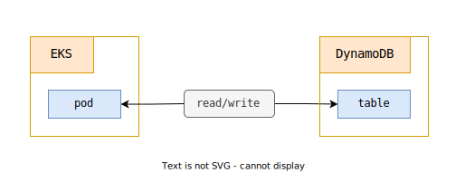
Setup the table and the repository
You can fork this project
We create the DynamoDB table, the ECR repository and an IAM user using this command :
# terraform create dynamo table + ecr repo + iam user
$ make dynamo-ecr-create
This command creates our resources using a Terraform project
The table is created :
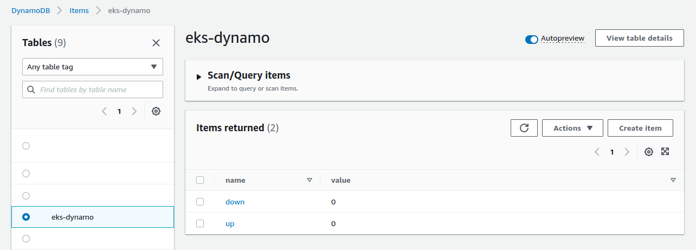
The repository is created :
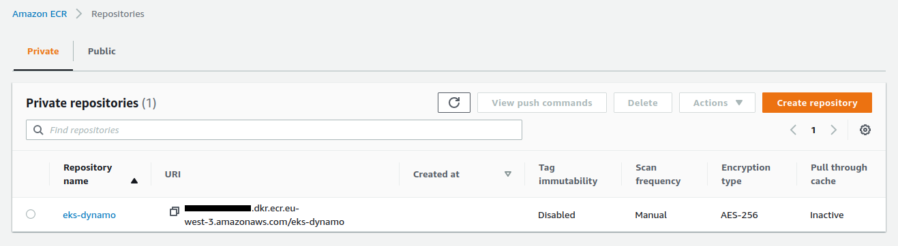
The IAM user is created :
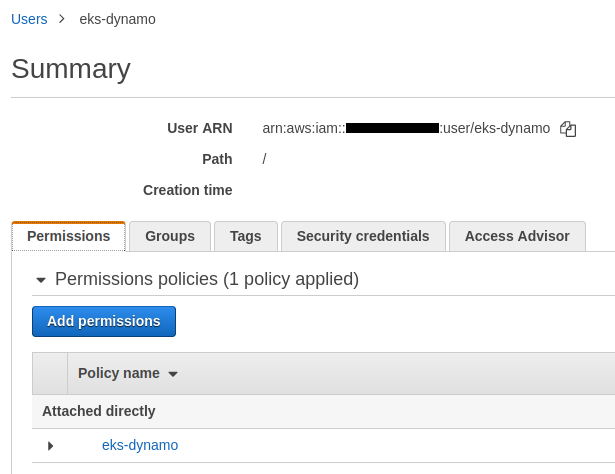
A Policy is attached to the user. It gives him the possibility to read and write in this dynamodb table :
data "aws_iam_policy_document" "user_policy" {
statement {
actions = [
"dynamodb:GetItem",
"dynamodb:UpdateItem"
]
resources = [aws_dynamodb_table.vote.arn]
}
}
An access key associated with this user has also been created :
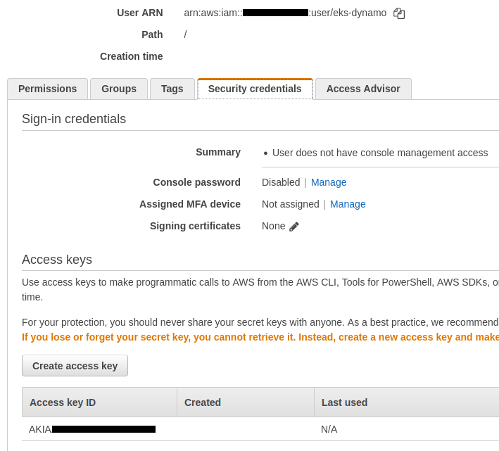
And finally, 4 files have been created at the root of our project. Each file contains an important variable :
.env_AWS_ACCOUNT_ID.env_AWS_ACCESS_KEY_ID.env_AWS_SECRET_ACCESS_KEY.env_REPOSITORY_URL
The vote application
You can launch the voting application via this command :
# run vote website using npm - dev mode
$ make vote
We open http://localhost:4000/
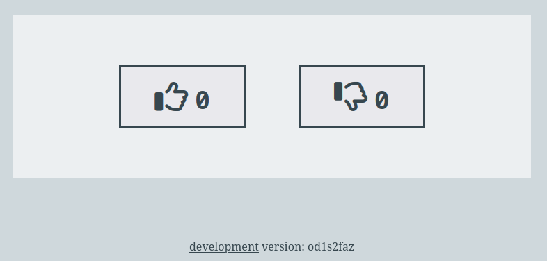
The site works :
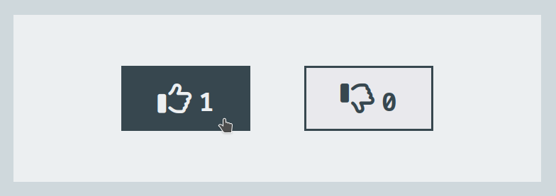
We see that the data is saved in the table :
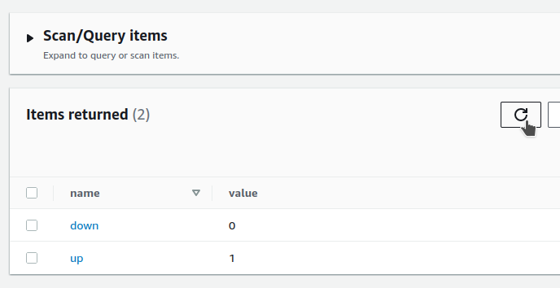
Running the application in a docker image
We create a docker image :
# build vote image
$ make build
This command runs this simple script :
docker image build \
--file Dockerfile \
--tag vote \
.
The Dockerfile executes the index.js file :
FROM node:18.4-slim
# ...
CMD ["node", "index.js"]
We start the image we just built with this command :
# run vote image
$ make run
This command runs this simple script :
docker run \
--rm \
-e WEBSITE_PORT=4000 \
-e DYNAMO_TABLE=$PROJECT_NAME \
-e DYNAMO_REGION=$AWS_REGION \
-p 4000:4000 \
--name vote \
vote
By opening http://localhost:4000/ we can see that the site no longer works :
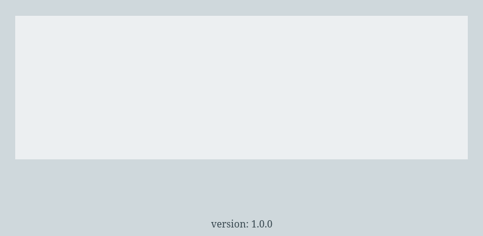
An error is thrown in the terminal :
/app/node_modules/@aws-sdk/credential-provider-node/dist-cjs/defaultProvider.js:13
throw new property_provider_1.CredentialsProviderError("Could not load credentials from any providers", false);
^
CredentialsProviderError: Could not load credentials from any providers
Indeed, the default behavior of the DynamoDBClient library is to get the identifiers via the ~/.aws/credentials local file
The error is thrown because this file is no longer available within the docker image
Here is a snippet of the application code :
const { DynamoDBClient } = require("@aws-sdk/client-dynamodb")
const { DynamoDBDocumentClient, ScanCommand, GetCommand, UpdateCommand } = require('@aws-sdk/lib-dynamodb')
// ...
const DYNAMO_TABLE = process.env.DYNAMO_TABLE || 'vote'
const DYNAMO_REGION = process.env.DYNAMO_REGION || 'eu-west-3'
const client = new DynamoDBClient({ region: DYNAMO_REGION })
const document = DynamoDBDocumentClient.from(client)
To solve this problem we use the credential-providers package
We use the fromEnv function
Here is a snippet of the updated application code :
const { DynamoDBClient } = require("@aws-sdk/client-dynamodb")
const { DynamoDBDocumentClient, ScanCommand, GetCommand, UpdateCommand } = require('@aws-sdk/lib-dynamodb')
const { fromEnv, fromIni } = require('@aws-sdk/credential-providers')
// ...
const DYNAMO_TABLE = process.env.DYNAMO_TABLE || 'vote'
const DYNAMO_REGION = process.env.DYNAMO_REGION || 'eu-west-3'
const credentials = fromEnv()
const client = new DynamoDBClient({ region:'eu-west-3', credentials })
const document = DynamoDBDocumentClient.from(client)
We create another docker image :
# build vote-env image
$ make build-env
This command runs this simple script :
docker image build \
--file Dockerfile.env \
--tag vote-env \
.
The Dockerfile executes the index-env.js file :
FROM node:18.4-slim
# ...
CMD ["node", "index-env.js"]
We start the image we just built with this command :
# run vote-env image
$ make run-env
This command runs this simple script :
docker run \
--rm \
-e WEBSITE_PORT=4000 \
-e DYNAMO_TABLE=$PROJECT_NAME \
-e DYNAMO_REGION=$AWS_REGION \
-e AWS_ACCESS_KEY_ID=$AWS_ACCESS_KEY_ID \
-e AWS_SECRET_ACCESS_KEY=$AWS_SECRET_ACCESS_KEY \
-p 4000:4000 \
--name vote-env \
vote-env
By opening http://localhost:4000/ we see that everything is working now :
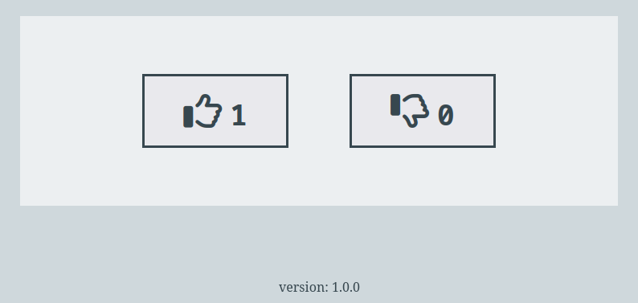
To kill the container you can run this command in a new terminal window :
# stop vote-env container
$ make vote-env
Setup the VPC and the EKS cluster
We push these 2 images to ECR with this command :
# push vote + vote-env image to ecr
$ make ecr-push
The images are now in the repository :
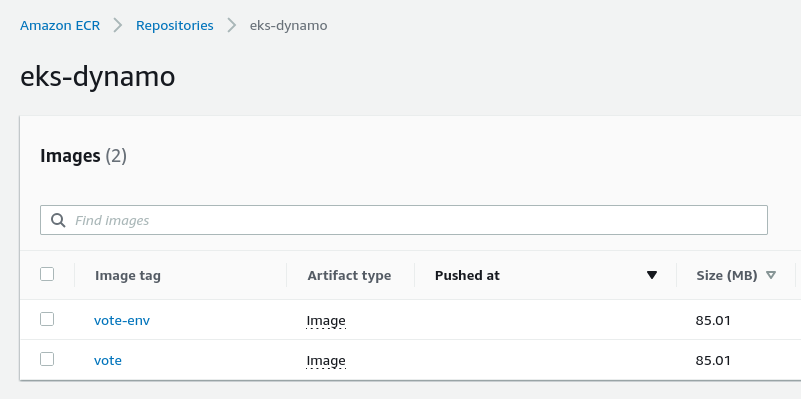
We create a VPC and an EKS cluster using this command :
# terraform create vpc + eks cluster
$ make vpc-eks-create
This command creates our resources by using a new Terraform project
Our cluster has been created :
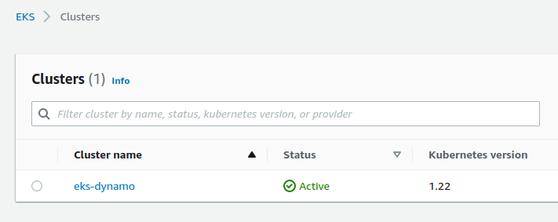
We deploy a first version of our application with this command:
# kubectl deploy vote
$ make kubectl-vote
Important : this command uses the kyml application which must be installed
Here is a video demonstration of using kyml
We use the kyml tmpl subcommand to inject variables into our template :
kubectl apply --filename k8s/namespace.yaml
kubectl apply --filename k8s/service.yaml
kyml tmpl \
-v DYNAMO_TABLE=$PROJECT_NAME \
-v DYNAMO_REGION=$AWS_REGION \
-v DOCKER_IMAGE=$REPOSITORY_URL:vote \
< k8s/deployment-vote.yaml \
| kubectl apply -f -
Note : we are launching the vote image, the starting one, which does not contain the management of credentials
Here is our manifest :
containers:
- name: vote
image: "{{.DOCKER_IMAGE}}"
ports:
- containerPort: 3000
env:
- name : WEBSITE_PORT
value : "3000"
- name : DYNAMO_TABLE
value : "{{.DYNAMO_TABLE}}"
- name : DYNAMO_REGION
value : "{{.DYNAMO_REGION}}"
Our application is deployed after a few seconds
We can watch in a new terminal window the state of our resources by using this command :
$ watch kubectl get all -n vote
And in another terminal window we execute this command :
# kubectl logs vote app
$ make kubectl-vote-log
This command displays the logs of our pod continuously :
POD_NAME=$(kubectl get pod \
--selector app=vote \
--output name \
--no-headers=true \
--namespace vote)
kubectl logs $POD_NAME \
--follow \
--namespace vote
We get the address of the Load Balancer to start the application in the browser :
# get load balancer url
$ make load-balancer
An error is thrown in our terminal :
/app/node_modules/@aws-sdk/client-dynamodb/dist-cjs/protocols/Aws_json1_0.js:1759
response = new DynamoDBServiceException_1.DynamoDBServiceException({
^
AccessDeniedException: User: arn:aws:sts::xxxxx:assumed-role/green-eks-node-group-xxxxx/i-0abcdef1234 is not authorized
to perform: dynamodb:GetItem on resource: arn:aws:dynamodb:eu-west-3:xxxxx:table/eks-dynamo
because no identity-based policy allows the dynamodb:GetItem action
We remove the vote deployment :
$ kubectl delete deploy vote -n vote
We now deploy the vote-env image with this command :
# kubectl deploy vote-env
$ make kubectl-vote-env
This command runs this script :
kyml tmpl \
-v DYNAMO_TABLE=$PROJECT_NAME \
-v DYNAMO_REGION=$AWS_REGION \
-v DOCKER_IMAGE=$REPOSITORY_URL:vote-env \
-v AWS_ACCESS_KEY_ID=$AWS_ACCESS_KEY_ID \
-v AWS_SECRET_ACCESS_KEY=$AWS_SECRET_ACCESS_KEY \
< k8s/deployment-vote-env.yaml \
| kubectl apply -f -
The deployment-vote-env.yaml manifest has 2 additional environment variables :
containers:
- name: vote
image: "{{.DOCKER_IMAGE}}"
ports:
- containerPort: 3000
env:
- name : WEBSITE_PORT
value : "3000"
- name : DYNAMO_TABLE
value : "{{.DYNAMO_TABLE}}"
- name : DYNAMO_REGION
value : "{{.DYNAMO_REGION}}"
- name : AWS_ACCESS_KEY_ID
value : "{{.AWS_ACCESS_KEY_ID}}"
- name : AWS_SECRET_ACCESS_KEY
value : "{{.AWS_SECRET_ACCESS_KEY}}"
By reloading our browser we see that our application now works :
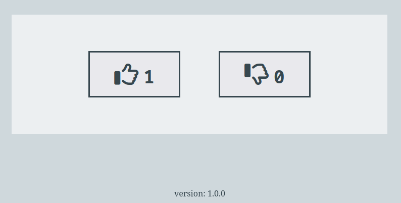
But managing our accesses in this way is not the most elegant way
This is also a problem of security and flexibility
We remove the vote deployment again :
$ kubectl delete deploy vote -n vote
About service account
- When you access the cluster, as a user, the kube-apiserver is used to authenticate you and check the roles and actions you can perform : authentication + authorization
- User accounts are for humans. Service accounts are for processes, which run in pods
- Service account are used to provide authentication + authorization mechanism to pods
- A service role is attached to a pod and allows it to perform certain actions
Setup a service account + deploy the app
We will use the IAM roles for service accounts module to improve our application :
Note : a good quick demonstration video, IAM Roles for Service Accounts & Pods
We remember that an eks-dynamo policy had been created previously :
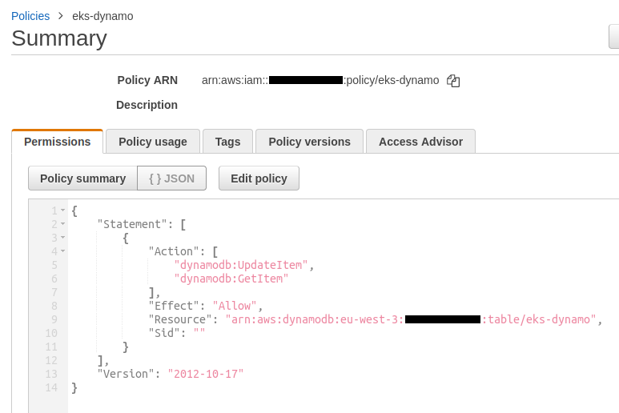
To solve our problem you must uncomment the code of these 3 resources :
module "iam_eks_role" {
source = "terraform-aws-modules/iam/aws//modules/iam-role-for-service-accounts-eks"
role_name = "${var.project_name}-service-account-role"
oidc_providers = {
one = {
provider_arn = module.eks.oidc_provider_arn
namespace_service_accounts = ["vote:eks-dynamo"]
}
}
}
resource "aws_iam_role_policy_attachment" "policy_attachment" {
role = module.iam_eks_role.iam_role_name
policy_arn = data.aws_iam_policy.policy.arn
}
resource "kubernetes_service_account" "service_account" {
metadata {
name = "eks-dynamo"
namespace = "vote"
annotations = {
"eks.amazonaws.com/role-arn" = module.iam_eks_role.iam_role_arn
}
}
}
- The iam-role-for-service-accounts-eks module is used to create a role
- Then we attach our
eks-dynamopolicy to the role created by the module - We create a service account within the kubernetes cluster using the Terraform resource kubernetes_service_account
We apply these 3 uncommented resources with this command :
# terraform create vpc + eks cluster
$ make vpc-eks-create
An OpenID Connect identity provider has been created :
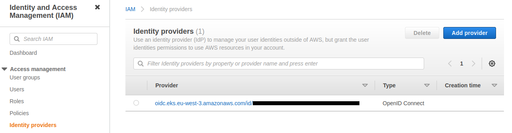
Here are its details :
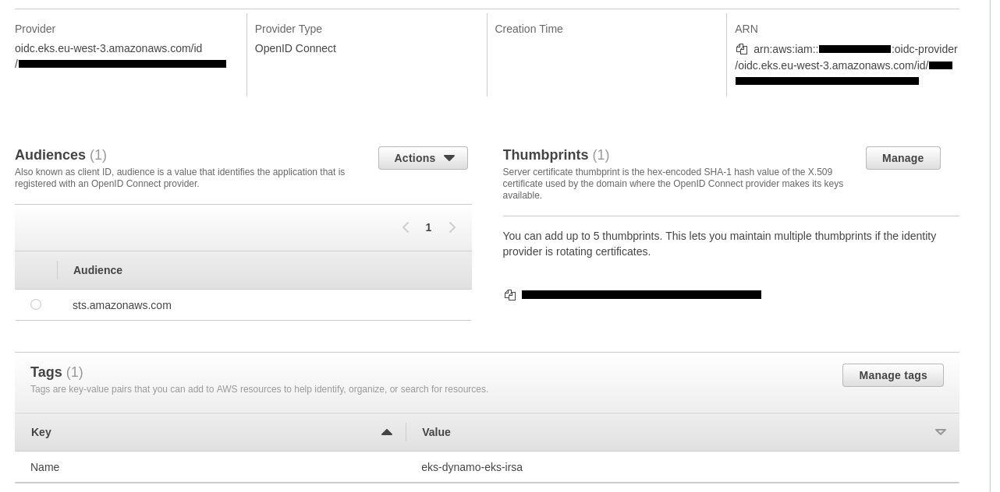
The role has been created and the policy is correctly attached :
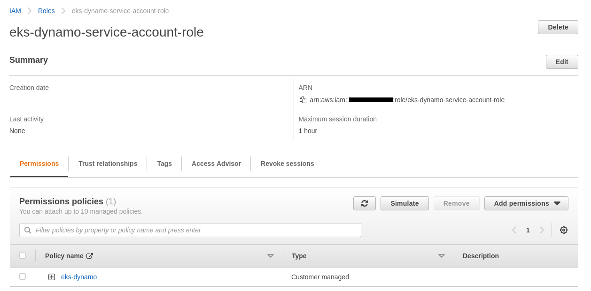
It is interesting to see the data displayed via the Trust relationships tab :
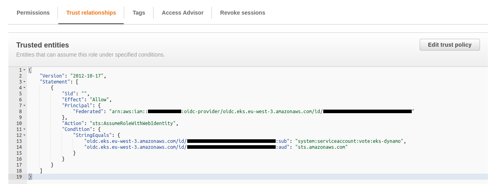
We can see the service account added to the cluster :
$ kubectl get serviceaccount -n vote
NAME SECRETS AGE
default 1 38m
eks-dynamo 1 15m
We can display the YAML content of the service account :
$ kubectl get serviceaccount eks-dynamo -n vote -o yaml
apiVersion: v1
automountServiceAccountToken: true
kind: ServiceAccount
metadata:
annotations:
eks.amazonaws.com/role-arn: arn:aws:iam::xxxxx:role/eks-dynamo-service-account-role
creationTimestamp: "2000-00-00T12:00:00Z"
name: eks-dynamo
namespace: vote
resourceVersion: "xxxx"
uid: xxxxx-xxx-xxx-xxx-xxxxx
secrets:
- name: eks-dynamo-token-srgkn
We will now deploy a version of our application that uses this service account :
# kubectl deploy vote with service-account
$ make kubectl-vote-sa
This command runs this script :
Note : we are using the vote docker image again
kubectl apply --filename k8s/namespace.yaml
kubectl apply --filename k8s/service.yaml
kyml tmpl \
-v DYNAMO_TABLE=$PROJECT_NAME \
-v DYNAMO_REGION=$AWS_REGION \
-v DOCKER_IMAGE=$REPOSITORY_URL:vote \
< k8s/deployment-vote-with-sa.yaml \
| kubectl apply -f -
The manifest just adds an extra line serviceAccountName:eks-dynamo :
serviceAccountName: eks-dynamo
containers:
- name: vote
image: "{{.DOCKER_IMAGE}}"
ports:
- containerPort: 3000
env:
- name : WEBSITE_PORT
value : "3000"
- name : DYNAMO_TABLE
value : "{{.DYNAMO_TABLE}}"
- name : DYNAMO_REGION
value : "{{.DYNAMO_REGION}}"
By reloading our browser we see that the site is working correctly :
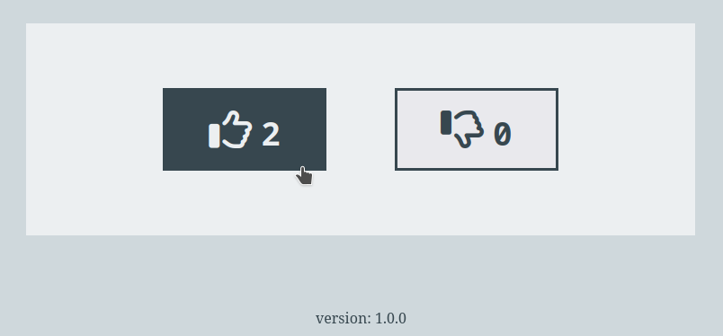
This demonstration is over, it is important to remove all resources :
# terraform destroy vpc + eks cluster
$ make vpc-eks-destroy
# terraform destroy dynamo table + ecr repo + iam user
$ make dynamo-ecr-destroy